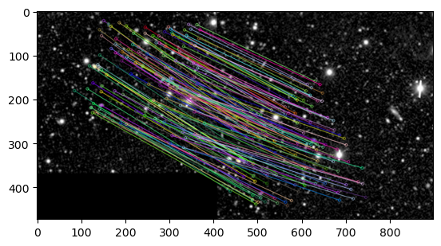
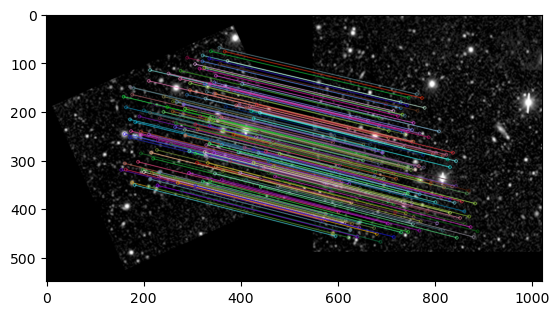
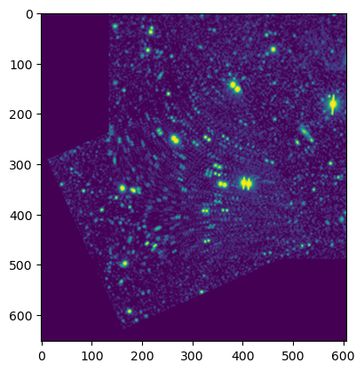

Using Isopod
InterStitching Of Pictures based On Descriptors
Example usage of the isopod package. Start by importing the package and creating a class instance.
[32]:
#import package
from Isopod import isopod
import cv2 as cv
import matplotlib.pyplot as plt
#create instance
isp = isopod()
With the instance active, we can now use the class methods to open two images, get their information and match coinciding areas.
[33]:
#open the images
isp.get_image("cut_1.png", "cut_2.png")
#perform the keypoint calculation (i.e. extract image features)
isp.calculate_keypoints()
#match the image features between cut_1.png and cut_2.png. 0.1 is the relative match distance.
isp.match_keypoints(0.1)
#draw the matches onto an image
img = cv.drawMatchesKnn(isp.grayscale_images[0], isp.keypoints[0],
isp.grayscale_images[1], isp.keypoints[1],
isp.matches, None,
flags = cv.DrawMatchesFlags_NOT_DRAW_SINGLE_POINTS)
#display the image
plt.figure()
plt.imshow(img)
[33]:
<matplotlib.image.AxesImage at 0x7feff34b4c70>

After seeing promising matches, we can now transform the images so that they actually fit together. We check again that there are matching keypoints
[34]:
#transform image by resizing and rotating. Each transformation calls the .match_keypoints() method with the given
# relative match distance again (it is good to increase it slightly)
isp.resize_images(0.2)
isp.rotate_images(0.2)
#draw matches
img2 = cv.drawMatchesKnn(isp.grayscale_images[0], isp.keypoints[0],
isp.grayscale_images[1], isp.keypoints[1],
isp.matches, None,
flags = cv.DrawMatchesFlags_NOT_DRAW_SINGLE_POINTS)
#display the image
plt.figure()
plt.imshow(img2)
[34]:
<matplotlib.image.AxesImage at 0x7feff35be0d0>

Finally, after the images have been transformed and the matches have been found, we can create the stitching (or rather the overlap) and get the final image.
[35]:
#perform stitching
final_image = isp.stitch_images()
#show final image
plt.figure()
plt.imshow(final_image)
[35]:
<matplotlib.image.AxesImage at 0x7feff3320520>

[ ]: